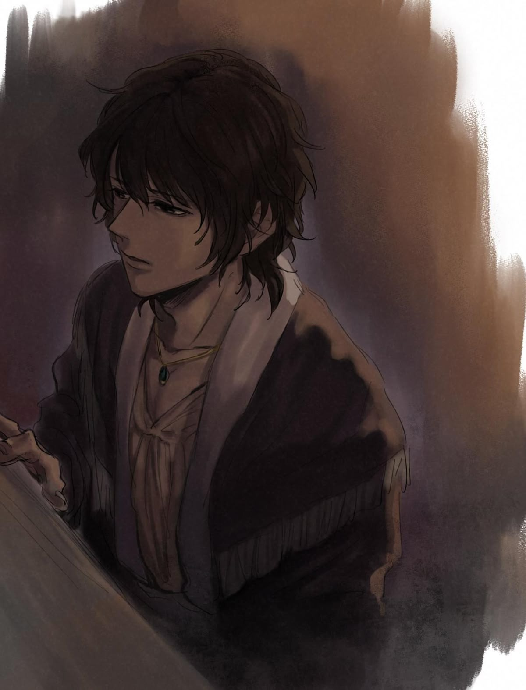

Hiromi Mahuo
Heir of the Vermilion Dynasty · Paragon of Irath, the Archon of Dominion
I. Identity
Full Name: Hiromi Mahuo
Pronunciation: hee-ROH-mee mah-HOO-oh
Age: 17
Race / Lineage: Human · the Mahuo line, through his mother Saeju, rightful heir of the Vermilion Dynasty
Faction: House Mahuo by blood; raised in the Cedar Enclave by Naiser Yukari, the Lord of the Cedars, who seats him on the Zettari bench among his own household.
Epithet: Paragon of Irath. In the south they say the ground he stands on is already his.
Status: Alive
Family: Mother Saeju Mahuo, killed when a roof came down on her in the war; uncle Cozbi Mahuo, Head of House Mahuo, who kept him for three years after the war; Naiser Yukari, who raised him; Senna Yukari, Naiser’s daughter, who sets his collar straight like a sister.
Current Location: Kharven-Seat, the Zettari bench in the great hall
Catalyst Event: Named Paragon by Irath, the seventh Archon, the Flame of Will and Dominion. Circumstances not known.
II. Soul Architecture
| Stat line | Stage IX Invocation · Master (Fire) Level 250 · State not known · Class not known Spirit IX Mastered, III · Fate VIII Walked 35%, II · Body Studied 10%, I · Lenses: home + 2 |
| Level | 250; it holds Invocation (215) and would hold Realization (230), and no Residual Strain builds in him short of 300 |
| Stage | IX, Invocation · Master |
| Sub-Stat ceiling | allocation stops at 550; 551 to 625 under strain only; ceiling 625 |
| Path | Spirit IX Mastered · Fate VIII Walked 35% · Body Studied 10% |
| Yield (η) | about 0.92 through the Core, at Spirit III |
| Class | not known |
| Mastery | Spirit III, Confessor: the lead, read from Level under Invocation’s ceiling. He carries the dead across and brings his own back over · Fate II, Drawn: Walked, a rung behind the lead. The Mahuo blood gives no grip; Irath’s blessing gave him one · Body I, Muridic: the Studied Body Path holds it two rungs under his lead, and it reads whenever his wardens and walls are made of matter |
| Lenses | home + 2 held (Chthonica, Mortalis, Judicium), the Master’s count |
| Soul Crystal | Fire |
| Points | 8,088 |
III. Wellspring Harmonizations
| Wellspring | Folk name | Kind | Titan | Operation | Hue | Depth | What it does in him |
|---|---|---|---|---|---|---|---|
| Chthonica | the Root | Wild | Atla’zon | conjunction | dark iron-oxide, rust and red earth | deep | The person and the ground become each other’s claim. Every Domain he raises comes up out of the floor with its roots already in, and the longer he holds a valley, the more it fights for him. CHEONHA stands on this. Strengthens Absorption, Economy and Gravity. |
| Mortalis | the Black Gate | Medium | Valmir | dissolution | venous black-red | deep | The Mahuo current. He looks at ending squarely and knows the gate as a road, and the dead of his line come back through it at his call. THE VERMILION LINE stands on this. Strengthens Persistence and Cognition. |
| Judicium | the Scale | Wild | Dazkar | separation | arc-blue with colored fringes | held | Irath’s own Wellspring, and the lens of the Unbowed Crown. A thing is parted from what it claims to be. His HAETAE carry it and gore what lies. Strengthens Acuity and Analysis. |
Aura: rust-red going to vermilion at the edge, the color of red earth and of his mother’s dynasty, with a black-red seam under it where the Black Gate runs, and arc-blue fringes when the Scale is reading. When he declares his ground, an amber light sits under all of it, the color of Irath’s King’s Heart.
IV–V. Stats
A normal look shows the Eight Primaries; a Primary is the total of its eight Sub-Stats (Dominion’s over seven, Throne outside it). Room to grow: every Primary sits under the Stage’s cap.
| Primary | Total | Sub-Stats |
|---|---|---|
| Vitality | 550 | Fortitude 70 · Absorption 110 · Constitution 80 · Hemostasis 50 · Regeneration 60 · Filtration 50 · Tolerance 70 · Threshold 60 |
| Ardency | 672 | Flux 110 · Alacrity 60 · Depth 120 · Penetration 60 · Compression 70 · Cascade 90 · Overchannel 52 · Density 110 |
| Gnosis | 790 | Perception 120 · Acuity 130 · Forecast 90 · Fluency 60 · Retention 100 · Analysis 120 · Cognition 80 · Vigilance 90 |
| Dexterity | 446 | Celerity 60 · Reflex 70 · Finesse 40 · Economy 90 · Evasion 60 · Grapple 30 · Feint 36 · Sequence 60 |
| Harmonics | 1,420 | Attunement 150 · Projection 230 · Breadth 260 · Stability 220 · Empathy 70 · Synergy 200 · Axis 130 · Suppression 160 |
| Resilience | 1,290 | Integrity 180 · Ward 200 · Persistence 150 · Anchoring 260 · Fortification 80 · Hardening 70 · Oath 210 · Continuity 140 |
| Tempering | 960 | Clarity 140 · Overflow 70 · Maturity 120 · Coherence 170 · Tempering Yield 110 · Ceiling 100 · Capacity 180 · Longevity 70 |
| Dominion | 1,960 | Radius 330 · Sovereignty 380 · Sense 170 · Gravity 300 · Pressure 260 · Command 360 · Fate 160 · Throne 0 |
VI. Force of Hand
No measured strike on file. He does not fight with his hands. His court fights for him, and he stands at the center of his ground and holds it.
VII. Aether Flow
| Reserve | 4,199,523 EU (about 4.2 × 10⁶), held as Essence (Spirit and Fate both draw on it), by the law of reserves at Level 250 |
| Flux Density | 2,000 EU/g |
| Yield (η) | about 0.92, Spirit III, Confessor: a twelfth of it hollows out in the Core. Through the Shell, at Body I, about 0.65. |
| AU/s | 1,840 at full output; recomputed at the Spirit III yield of about 0.92 (it read 2,000 at the old V) |
| From full | about 38 minutes of full output, far longer at the pace of a held field |
| A Fate pull | at Fate II, about 0.80 of what he spends arrives; Fate’s price is the knot |
VIII. Traits
Every Trait reads at his lead Mastery, Spirit III.
CHEONHA (천하 · 天下), All Under Heaven · Primary Trait
CHEONHA is basically Summoning Manipulation joined to Domain Manipulation: the power to claim ground and rule every summoned thing that stands on it. Hiromi drives his seal into the earth, and from that point out to the edge he names, Irath’s law holds: one will rules there, and every other will bends or breaks. Anything summoned inside that boundary, by him or by anyone else, stands on his soil and answers to him. He can call his own to his side, and he can turn, hold or send home another summoner’s creatures, as long as they stand on his ground. A summoning begun inside his claim has to pass through it, so he can block it or bend it. Another person’s Domain that meets his has to contest the claim, and the weaker claim gives way. The land also raises its own warden: guardians drawn up out of the soil that walk the boundary, carry his decree, and throw down anything that crosses without his leave, as Talos walked the shore of Crete. The price is that all of it hangs on the seal. While the seal stays in the ground the realm holds. If it is pulled or broken, the whole domain drains away at once, as Talos bled out when Medea drew the one bronze nail from his ankle, and every summon he took goes free. A summon that serves because it wants something, more than because it fears the crown, can refuse him.
THE VERMILION LINE · Jongmyo (종묘 · 宗廟) · Secondary Trait
THE VERMILION LINE is basically Ancestral Evocation: the power to call up the dead of his own blood. Hiromi carries his mother’s claim, and the dead of the Vermilion Dynasty answer to it. He can call up the kings and queens of his line, and they come in their own forms, wearing the color they died in. They can stand around him as a royal guard and fight. He can ask them for counsel, and they give it from long lives of war and rule. Or one of them can lend him their strength and their art for a while. On ground he holds under CHEONHA they come at full strength, because there a king stands on his own land, and they will stand watch over his seal. They answer the claim before they answer the boy, so a dead king who thinks him unworthy can test him or refuse him. The longer one of them lends him strength, the harder that king leans back, until the line between his will and theirs begins to blur.
Blessing
Paragon of Irath. The Archon of Will and Dominion has named him. It is the blessing that gave him his grip on Fate, and the reason Irath’s own working answers him. Offered as his window line:
[Blessing: The King's Heart]
[He who commands himself commands the world.]
IX. Domain
CHEONHA, All Under Heaven. It came to him at Transcendence and roots through Chthonica, so it rises out of the ground it is raised on and grows harder to break the longer he holds that ground. Its full shape is ILWOL-OBONG below.
X. Techniques
HAETAE (해태 · 獬豸), the Wardens of the Law · Signature Construct
Beasts of stone and bronze that Hiromi raises out of his claimed ground. The haetae is the Korean beast of justice, said to know right from wrong and to butt the guilty, and its statues still guard the palace gate. His wardens walk the boundary of CHEONHA, guard the seal, and gore anything that crosses without his leave. They carry Judicium, so a lie told on his ground shows under their reading. Each warden runs on one vermilion vein sealed with one nail. Pull the nail and the warden crumbles back into the earth.
EOGA HAENGNYEOL (어가행렬 · 御駕行列), the Royal Procession · Signature Summon
The whole Vermilion court comes up out of the ground in ranks, as the Joseon royal processions were painted rank by rank: banner-bearers, an honor guard, generals on horseback, and a dead king borne in a palanquin at the center. It is THE VERMILION LINE at full scale, his army, called only when the fight deserves it. The procession serves the crown first. If the king in the palanquin turns against Hiromi, the whole line turns with him.
ILWOL-OBONG (일월오봉 · 日月五峰), the Sun, Moon and Five Peaks · Domain Construct
The painted screen that stood behind every Joseon king’s throne. Hiromi raises it at his back, and its five peaks, its sun and its moon become real around his ground: mountain walls, a sky of his own, and a throne at the center. It is CHEONHA made visible. When he sits, his domain is fixed. The seal is set in the throne, so if he is driven off it the walls begin to fall.
DONGIN (동인 · 銅人), the Bronze Man · Ultimate
A colossal guardian of bronze raised from his ground, with one of his ancestor kings riding inside it as its heart, as Talos’s life ran through his one vein. It is both of his Traits in one body and the clearest form of the Talos he was built on. It has the Talos flaw as well: one nail at the ankle. Pull it and the dead king inside drains out.
THE UNBOWED CROWN · Irath’s Root Invocation
Irath’s own working, [IrW] Will and [Krn] Crown on Judicium and Ignivale, held at Invocation and above. Hiromi states a conviction aloud and means it, and within a bounded field his will is sovereign: Essence reorganizes to obey the conviction, lesser wills fall in line or take feedback in proportion to how hard they resist, and he is shielded from outside domination. The field audits itself. If his own later actions contradict what he declared, it collapses onto him with everything it has gathered, and a doubt planted in him breaks it from the source outward.
XI. Spirit Axes
Saeju Mahuo (mother) The claim in his blood is hers.
Cozbi Mahuo (uncle) Came up the valley road for him after the war with the dead walking behind like an honor guard, and kept him three years. Hiromi wears an olive coat like his because he asked to. He loves his uncle and has shouted at him to stop.
Naiser Yukari The Lord of the Cedars, who raised him in the Enclave and taught him in the yard and on the road.
Senna Yukari Raised beside him. She sets his collar straight and he bears it like weather.
Dari His uncle’s nine-tailed fox, founded with a charter to follow and protect him, serve him, and report every great change.
XII. Resistances
- Dominion 1,960, Sovereignty 380, Command 360, Ward 200: domination, command and Domain-erasure aimed at him run into a will that was built to rule.
- The Unbowed Crown: shields him from outside domination while the field stands.
- Water and filth: Chthonica holds only what it touches. Put water, grease or filth between him and his ground and the grip lets go all at once, and on open water or a moving deck CHEONHA has nothing to root in.
- The seal: the whole realm hangs on it. Break it and everything goes.
- Doubt: a real doubt in his own conviction collapses the Crown from inside.
- Body: Dexterity 446, Vitality 550. Up close, without his court, he is a young man in a coat.
- The gate: a soul that has stopped fearing the Black Gate drifts toward it, cooling a little at a time.
XIII. Physical Description
Hair: Brown, thick and loose, falling shaggy over the brow and to the collar at the back.
Eyes: Brown, heavy-lidded and downcast, quick to glare.
Face: Fine-boned and quiet, the mouth often a little open as if about to speak.
Dress: A dark mantle over a cream shirt gathered at the throat, its lining pale at the collar and a fringe at the shoulder. In company, the olive coat of the Sum-gol Post, cut like his uncle’s.
Carries: A green stone on a fine gold chain at his throat.
XIV. Psychology
How he moves: He stands at the center and lets the field come to him. He sits like a man who expects the chair to be his.
Voice: Plain and direct. As a boy he was loud and eager, and the eagerness never quite left; it shows when a fight is offered.
Underneath: Not spiteful. The war took his mother under a roof, and in him what grew in the hole it left was something stubborn and green and patient, like a seed under snow that has decided to come up.
The bind: Irath refuses alliance with Auren, the Archon of Death, because to end is to surrender. Hiromi is Irath’s Paragon and the son of the house that keeps the dead, and he calls his own dead to his side.
XV. Equipment
| Item | What it is | Grade | Rarity | Note |
|---|---|---|---|---|
| The seal | the seal he drives into the ground to raise CHEONHA | not known | Unique | his whole realm hangs on it |
| The green stone | a green stone on a fine gold chain | not known | not known | worn at the throat |
| The olive coat | the olive of the Sum-gol Post, cut like his uncle’s | plain | Rare | he asked for it to be olive |
| The dark mantle | dark cloth with a pale lining, fringed at the shoulder | plain | Uncommon | — |
XVI. Temperance Record
- Stages I to VII: crossed as a boy in Sum-gol and in the Cedar Enclave, under Naiser Yukari. Details not known.
- Stage VIII, Transcendence: CHEONHA came to him as his Domain. Details not known.
- Stage IX, Invocation: Irath’s Root Invocation answered him. Details not known.
- Next gate: Stage X, Realization, which his Level 250 already holds (230): only the Catalyst is wanting, and past Level 300 without it he would come into Residual Strain.
XVII. Fracture Log
- Lost his mother, Saeju, when a roof came down on her in the war.
- Taken up the valley road by his uncle Cozbi, with the dead walking behind them like an honor guard, and kept by him for three years.
- Sent down the Kessen road to the Cedar Enclave to train under Naiser Yukari, with Dari to guard him; met a Sin of Sloth on the road and asked whether he got to fight it.
- Raised by the Lord of the Cedars in his own valley.
- Named Paragon by Irath, the Archon of Dominion.
- At the Moto table, seated on the Zettari bench with the Yukari household, he looked down the hall at the princess’s maid, Gwi, and glared, as a man glares at a stranger sitting in his father’s chair.